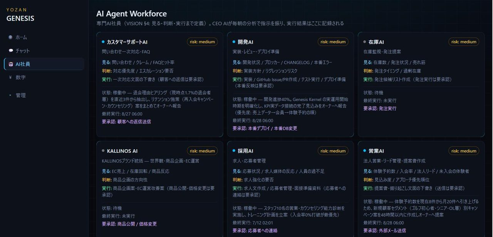
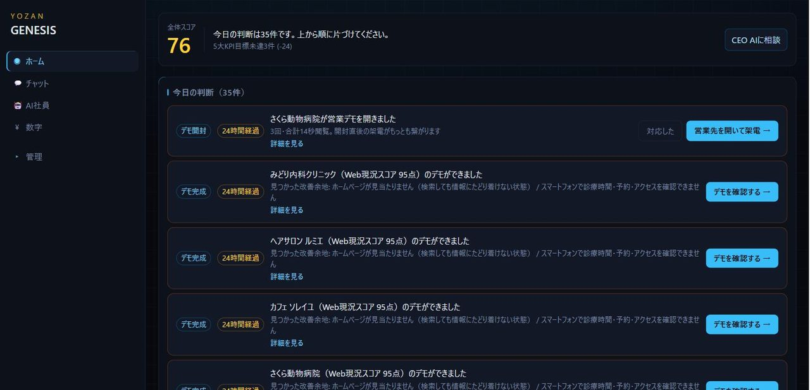

体験に来たのに入会しなかったお客様。来店間隔が伸びてきた会員様。埋まらないままの空き枠。どれも「気づいて、すぐ動けば」拾える売上です。でも現場は忙しく、人はフォローを忘れます。AI店長は忘れません。
AI店長は、店のデータを見て「今日やるべきこと」を提案し、あなたの承認で動きます。下は実際に動いている画面です。


※「実画面」は本番環境のスクリーンショットです（お客様の氏名・電話番号・メールアドレスのみサンプルに置き換えています）。「再現画面」はログインが必要で公開できない画面を、同じレイアウト・同じ配色でサンプルデータにより再現したものです。デモでは実機で全画面をそのままお見せします。
予約システムや会員管理システムは、どの会社のものも「記録する道具」です。AI店長は記録の上で「次の一手」を提案する仕組みで、予約・受付・売上・会員のデータが1つにつながっているYOZANだからできることです。ばらばらの道具を後からAIでつないでも、この動きはできません。
※ AI店長は自動では送信しません。実行されるのは、オーナーまたは店長が承認した提案だけです。機能は体験フォロー・朝のダイジェストから順次提供します。